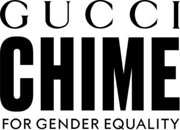

Trade Mark Journal No.2025/020 16 May 2025
WO0000001851157 (18,25,35,36,41)
Office of origin: Italy
Date of International Registration:23 December 2024
Date of designation in the UK:
23 December 2024

International priority date claimed: 18 December 2024
(Italy)
(302024000189042)
- Class 18
- Leather and imitations of leather; animal skins and hides; luggage and carrying bags; umbrellas and parasols; walking sticks; whips, harness and saddlery; collars, leashes and clothing for animals; bags; shoulder bags; handbags; boston bags; waist packs; sling bags for carrying infants; shopping bags; duffle bags; tote bags; evening handbags; clutch bags; wallets; purses; leather credit card cases and holders; business card cases; travelling cases of leather; shoe bags for travel; briefcases; attaché cases; pouches of leather; carrying cases made of leather; school bags and satchels; suitcases; sports bags; bags and holdalls for sports clothing; key cases made of leather; backpacks; rucksacks; carry-on bags; vanity cases, not fitted; shaving bags sold empty; beach bags; covers for animals; garment bags for travel; hat boxes of leather; haversacks; labels of leather; pouch baby carriers; randsels [Japanese school satchels]; saddlebags; trunks [luggage]; travelling bags; travelling sets (leatherware); chain mesh purses; umbrella covers; music cases; clothing for pets; bags for carrying pets; smart pouches of leather incorporating digital components; smart bags incorporating digital components; interconnected pouches of leather incorporating near field communication (NFC) technology; interconnected bags incorporating near field communication (NFC) technology; leather trimmings for furniture, furniture coverings of leather; leather thongs for fastening or securing items; imitation leather or leather for shoes; shoulder belt for bags, leather shoulder belts.
- Class 25
- Clothing; footwear; headwear; belts; clothing authenticated by non-fungible tokens [NFTs].
- Class 35
- Event marketing; promotion, advertising and marketing of on-line websites; arranging, conducting and promoting special events for commercial and advertising purposes; advertising by transmission of on-line publicity for third parties through electronic communications networks; on-line retail services and retail services relating to perfumery goods, non-medicated cosmetics, make-up preparations; on-line retail services and retail services relating to jewellery, horological apparatus, watches; on-line retail services and retail services relating to optical goods, eyewear, cases for mobile; on-line retail services and retail services relating to leather and imitations of leather, animal skins, hides, trunks and travelling bags, umbrellas and parasols, walking sticks, whips, harness and saddlery, bags, shoulder bags, handbags, boston bags, waist packs, sling bags for carrying infants, shopping bags, duffle bags, tote bags, evening handbags, clutch bags, wallets, purses, leather credit card cases and holders, business card cases, travelling cases of leather, shoe bags for travel, briefcases; on-line retail services and retail services relating to attaché cases, pouches of leather, carrying cases made of leather, school bags and satchels, suitcases, sports bags, bags and holdalls for sports clothing, key cases made of leather, backpacks, rucksacks, carry-on bags, vanity cases sold empty, shaving bags sold empty, beach bags; on-line retail services and retail services relating to clothing, footwear and headgear; organization of fashion shows for promotional purposes; consultancy regarding public relations communication strategies; psychological testing for the selection of personnel; personnel recruitment; sponsorship search.
- Class 36
- Charitable fund raising; organization of monetary collections; financial research; investment of funds; arranging finance for construction projects; surety services; loans (financing).
- Class 41
- Education; providing of training; entertainment; sporting and cultural activities; coaching [training]; arranging and conducting of colloquiums, conferences, congresses; organization of competitions [education or entertainment]; organization of fashion shows for entertainment purposes; organization of exhibitions for cultural or educational purposes; arranging and conducting of workshops [training]; publication of texts, other than publicity texts; tutoring; cultural, educational or entertainment services provided by art galleries; providing museum facilities [presentation, exhibitions]; academies (education); film production, other than advertising films.
GUCCIO GUCCI S.P.A.
Representative: Haseltine Lake Kempner LLP, Fountain House, 4 South Parade Leeds LS1 5QX UNITED KINGDOM